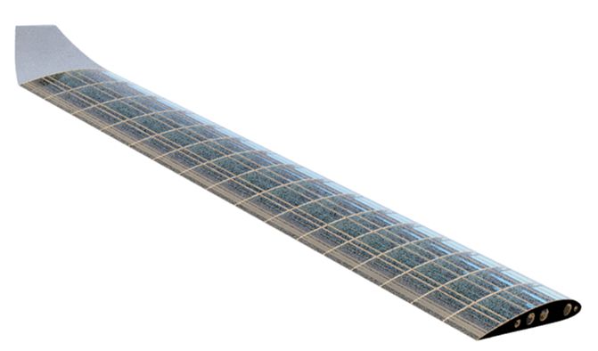
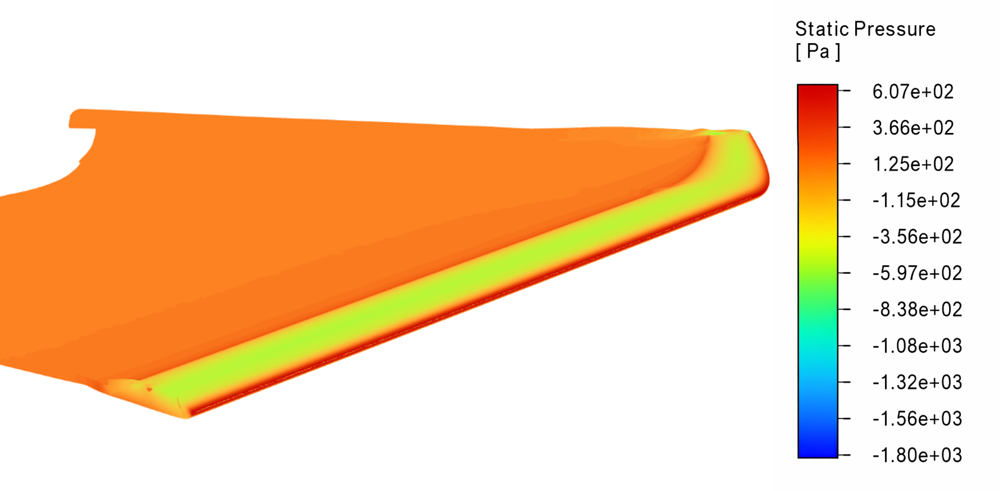

Why Longer Wings Make Better Drones
Think of an albatross versus a sparrow — the long, narrow wings of the albatross waste almost no energy in flight. The same principle applies to drone wings. This project quantifies exactly how much efficiency is gained by increasing the wing's aspect ratio, and confirms the structure can still handle competition loads.

The Brunel UAS Society's 2022 competition wing (AR = 6.3, NACA 4415) is the starting baseline. The IMechE UAS Challenge 2026 rewards efficiency, endurance and technical depth — all areas where a higher aspect ratio configuration offers a quantifiable scoring advantage.
BrUAS 2022 Baseline
| Parameter | Value |
|---|---|
| Aerofoil | NACA 4415 |
| Wingspan b | 2520 mm |
| Chord c | 399.9 mm |
| Aspect ratio | 6.3 |
| Wing area | ≈ 1.0 m² |
| Cruise speed | 31.5 m/s |
| Load limit | 3.5 G |
Induced drag scales inversely with aspect ratio — doubling AR roughly halves the induced drag term. This is the fundamental aerodynamic motivation for the project.


